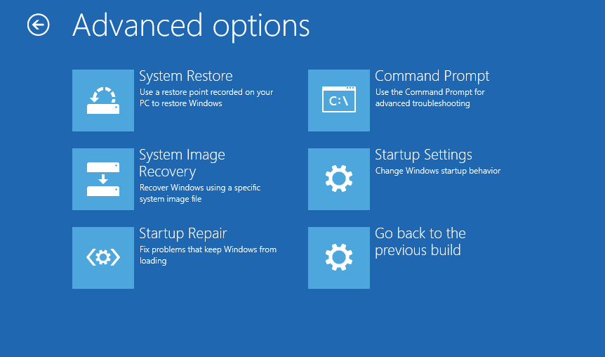
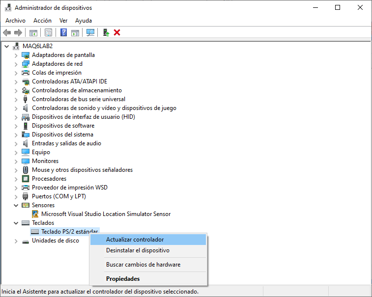
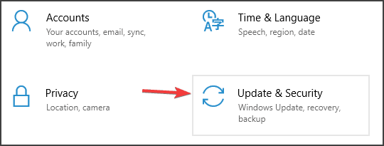
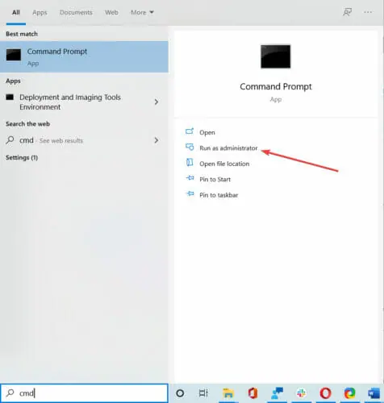
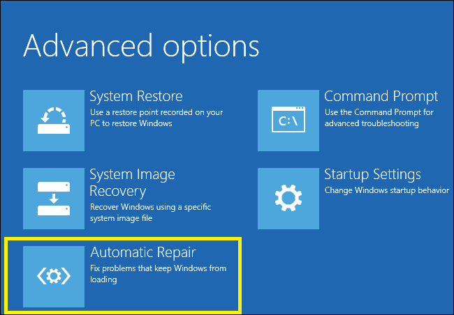
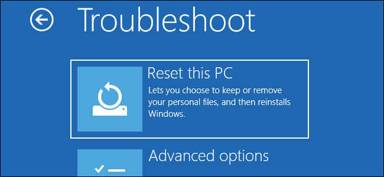

FAT_FILE_SYSTEM
La causa principal es la corrupción del disco en el sistema de archivos o bloques (sectores) defectuosos. Los controladores SCSI e IDE dañados también pueden causar el error.
Utilizar modo seguro
Esta no es una solucion permanente y solo debe ser utilizada si no es posible acceder al sistema.
- Mientras la computadora se enciende debes reiniciarla, es posible que tengas que repetir este paso varias veces hasta que empieze el modo de reparacion automatica
 - Seleccione Troubleshoot > Advanced options > Startup settings and click on Restart
- Cuando tu computadora se reinicia presione F5 o 5 para acceder al modo seguro con acceso a red
Actualizar los controladores de dispositivo
Existe una gran posibilidad de que los controladores instalados en su ordenador no sean compatibles con Windows 10. Actualizar sus controladores no es difícil. Simplemente diríjase al Administrador de dispositivos para actualizarlos.

Se recomendado que actualice sus controladores de gráficos, controladores de red, controladores de chipsets y controladores de dispositivos de entrada.
Correr el Troubleshooter de Windows
- Abrir la app de configuracion e ingresar a actualizaciones y seguridad
 - Seleccione Troubleshoot del menu en la izquierda
- Seleccione Pantallazo azul de la lista y clickee Correr el Troubleshooter

- Siga las instrucciones para completar el proceso
Usar el Comprobador de Archivos del Sistema
Busque cmd en el cuadro de búsqueda y ejecutelo como administrador.

Escriba el siguiente comando sfc /scannow y luego presione Enter.
Reinicie el sistema después de completar el análisis.
Usar la herramienta DISM
Siguiendo los mismos pasos que en la solucion anterior para abrir el cmd, esta vez utilize el comando DISM /Online /Cleanup-Image /RestoreHealth. Una vez terminado el proceso reinicie el sistema.
Formatear la PC
Formatear su propia PC puede parecer extremo, pero en realidad es una practica bastante comun, sencilla y util a la que no se le deberia tener miedo.
- Mientras la computadora se enciende debes reiniciarla, es posible que tengas que repetir este paso varias veces hasta que empieze el modo de reparacion automatica
 - Seleccione Troubleshoot > Resetear esta PC
 - Seleccione la opcion que le parezca mas comoda, una volvera a instalar Windows pero conservara tus archivos personales mientras que la otra opcion eliminara todo
- Una vez empezado el proceso, no lo interrumpa y espere